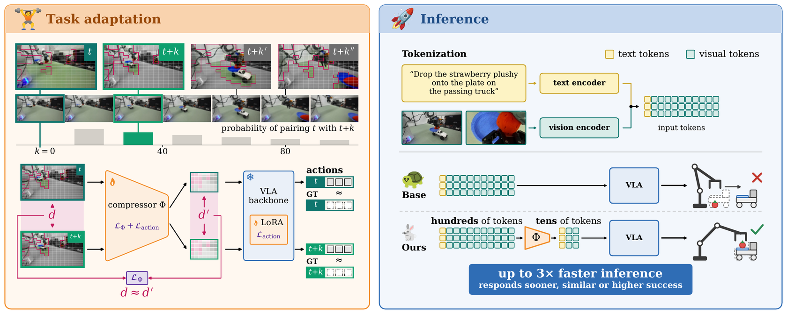
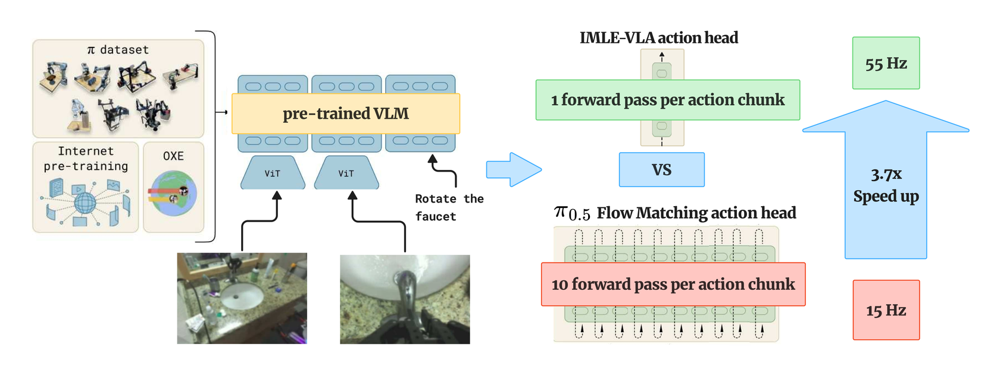

Publications

Vision-language-action (VLA) models often represent each visual observation with hundreds of tokens and pass this sequence through a backbone with billions of parameters, making inference slow and adaptation costly for each new robot or task. We show that preserving pairwise distances between visual-token sequences enables substantial compression without sacrificing task success. Across OpenVLA-OFT and a π0.5-based VLA, PAIR shortens the sequence by more than 14×, accelerates inference by 2.4–2.8× with no success drop, and cuts adaptation wall-clock time roughly in half.
Full abstract
Vision-language-action (VLA) models often represent each visual observation with hundreds of tokens and pass this sequence through a backbone with billions of parameters, making inference slow and adaptation costly for each new robot or task. Shortening the sequence can reduce these costs, but compression can discard visual information needed for reliable control. Prior learned compression methods use only the action-prediction loss as their training objective, without explicitly constraining which visual information is retained. We show that preserving pairwise distances between visual-token sequences enables substantial compression without sacrificing task success. Motivated by our finding that visual-token changes have low-dimensional structure, we formulate visual-token compression as a compressed-sensing problem: the distance-preservation loss explicitly constrains what the compressed sequence retains, while the action loss trains the policy to act on the compressed tokens. Across OpenVLA-OFT and a π0.5-based VLA, PAIR shortens the sequence by more than 14×, accelerates inference by 2.4–2.8× with no success drop, and cuts adaptation wall-clock time roughly in half. On LIBERO, PAIR matches uncompressed OpenVLA-OFT. On six real-robot tasks and both backbones, PAIR matches the base policy on static tasks and succeeds far more often on reactive tasks, where the scene changes during action-chunk prediction.

A leading design couples this backbone with a dedicated continuous action head trained via diffusion or flow matching. However, such heads rely on iterative multi-step sampling, for example 10 Euler steps in π0.5. This creates an inference bottleneck that produces stop-and-go movement in the robot and slower task completion. We introduce IMLE-VLA, which replaces the iterative action head with a single-step conditional generator trained via conditional Implicit Maximum Likelihood Estimation (cIMLE). When IMLE-VLA is applied to π0.5, it increases inference frequency 3.67x (55 Hz vs. 15 Hz), enabling up to 11x higher action throughput.
Full abstract
Vision-language-action (VLA) policies leverage pretrained vision-language backbones to achieve strong cross-task generalization. A leading design couples this backbone with a dedicated continuous action head trained via diffusion or flow matching. However, such heads rely on iterative multi-step sampling, for example 10 Euler steps in π0.5. This creates an inference bottleneck that produces stop-and-go movement in the robot and slower task completion. We introduce IMLE-VLA, which replaces the iterative action head with a single-step conditional generator trained via conditional Implicit Maximum Likelihood Estimation (cIMLE). The cIMLE objective promotes multimodal action coverage, avoiding the mode collapse of naive regression heads while eliminating multi-step sampling entirely. When IMLE-VLA is applied to π0.5, it increases inference frequency 3.67x (55 Hz vs. 15 Hz), enabling up to 11x higher action throughput. On the 40-task LIBERO benchmark, IMLE-VLA achieves the highest average success rate (98.0%) among all baselines while leading in inference frequency. Under the test-time perturbations of LIBERO-plus, IMLE-VLA retains π0.5's robustness while other baselines degrade sharply, confirming that the cIMLE head preserves generalization. Real-world experiments on a Franka Emika Panda across four tasks demonstrate smoother motion (2.2x to 3.0x lower jerk) and faster task completion, with IMLE-VLA outperforming π0.5 on every task and reducing average VLA inference time per episode by 3.9x to 6.6x.
Experience
- ML Engineer Intern, RBC Borealis AI · fall 2024 · real-time credit-adjudication model pipelines and monitoring
- ML Engineer (contract), Mosaic · 2023 – 2024 · Canada's first chatbot for newcomers, 600k+ users
- Software Engineer Intern, NetApp · 2022 – 2023 · StorageGRID S3 API backend and Angular front-end
- Software Engineer (contract), BGC Engineering · 2022 · equipment-management app for 700+ engineers